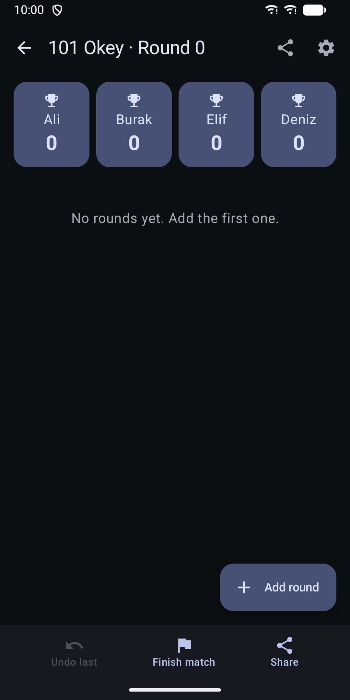
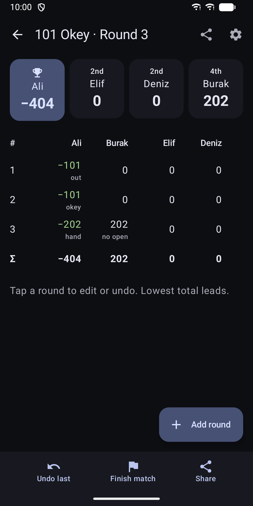

Okey Punktezähler: 101 Okey
Punkte für 101 Okey und Okey: Strafen, Verlauf, Spielerstatistik und Widget.






Über die App
Zählt die Punkte am Okey-Tisch ohne Zettel. Okey Score Counter wertet 101 Okey und normales Okey für 2 bis 4 Spieler aus, einzeln oder als Paar (eşli). Die App gibt es auf Deutsch, Englisch und Türkisch. WERTUNG - Wähle 101 Okey oder Okey, Einzel oder Paare. - Trage jede Runde ein: die Restsumme der Steine und wer fertig geworden ist. - Mit einem Tipp: Ende mit Okey, Ende aus der Hand, nicht geöffnet und falsch abgelegter Okey oder Joker. - Eine Vorschau zeigt die Runde, bevor du sie speicherst. - Die niedrigste Summe führt, markiert auf der Anzeigetafel. FEHLER KORRIGIEREN - Bearbeite jede frühere Runde, alle Summen werden neu berechnet. - Mache eine Runde rückgängig und stelle sie wieder her, falls nötig. - Ändere die Strafwerte für eine Partie, jede Runde wird neu berechnet. - Die Standardregeln sind änderbar. Bestehende Partien behalten ihre eigenen Regeln. VERLAUF UND STATISTIK - Jede Partie bleibt im Verlauf, mit Suche und Filter nach Spiel. - Die Spielerstatistik zeigt Partien, Siege, Siegquote je Spiel, Durchschnitt pro Runde, beste Partie, Enden und falsche Okeys. TEILEN - Teile die Anzeigetafel als Text oder als Bild. - Du bestimmst den Inhalt: Rundentabelle, echte Namen oder Spieler 1, 2 und so weiter. WIDGET - Ein Widget auf dem Startbildschirm zeigt die Summen der aktuellen Partie. Tippe darauf, um die Anzeigetafel zu öffnen. DATENSCHUTZ - Kein Konto, keine Analyse, kein Tracking. - Die App hat keine Internetberechtigung. Deine Daten bleiben auf deinem Handy. - Die App ist von der Cloud-Sicherung und der Geräteübertragung ausgenommen. - Du kannst in der App eine Partie oder alle Daten löschen. KOMFORT - Helles und dunkles Design, passend zur Systemeinstellung. - Layouts für Handys und Tablets. - Beschriftungen für Screenreader und große Tippflächen. KAUF Die App ist ein kostenpflichtiger Download bei Google Play. Sie hat keine In-App-Käufe und keine Abos, alle genannten Funktionen sind enthalten.